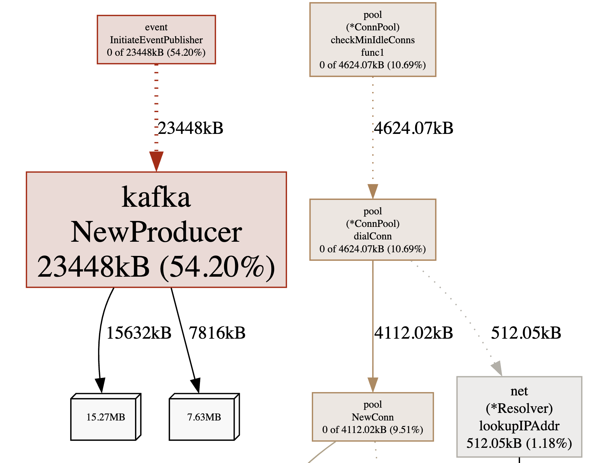
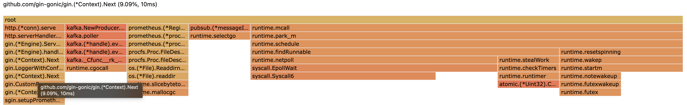
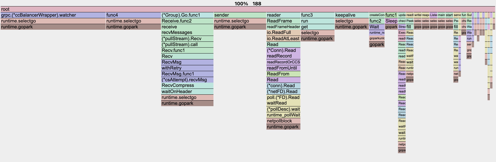

Go Server Profiling with pprof
Contents
Before I start writing about profiling, I would like to mention that this blog is not a comprehensive guide to profiling. This is more like a quick start guide for me. I am sharing it here, just in case it helps someone else.If it’s alright with you, we can begin.
What is profiling?
It’s a way to measure the performance of your application. It can be used to find bottlenecks in CPU, memeory, and other resources. pprof is a profiling tool for a Golang application.
Integration
Install the pprof package
First, we will need to download the package.
|
|
Import the package
|
|
Add pprof server
|
|
Post this, just start your application.
Profiling
Now, that we have integrated pprof, we can start profiling our application.
Visualize the profile
To visualize the out, we will need graphviz and gv installed. Since I am on ubuntu, I will use apt to install them.
|
|
Web Output
|
|
This will start a server on port 9090. You can access the profiling data on this server. Further, you can replace the profile with any of the profile descriptions mentioned above.
Image Output
|
|
Profiles
- allocs: A sampling of all past memory allocations
- block: Stack traces that led to blocking on synchronization primitives
- cmdline: The command line invocation of the current program
- goroutine: Stack traces of all current goroutines
- heap: A sampling of memory allocations of live objects. You can specify the gc GET parameter to run GC before taking the heap sample.
- mutex: Stack traces of holders of contended mutexes
- profile: CPU profile. You can specify the duration in the seconds GET parameter. After you get the profile file, use the go tool pprof command to investigate the profile.
- threadcreate: Stack traces that led to the creation of new OS threads
- trace: A trace of execution of the current program. You can specify the duration in the seconds GET parameter. After you get the trace file, use the go tool trace command to investigate the trace.
Query Parameters
You can also pass following queries to the url, parameters can be passed via GET query params:
- debug=N (all profiles): response format: N = 0: binary (default), N > 0: plaintext
- gc=N (heap profile): N > 0: run a garbage collection cycle before profiling
- seconds=N (allocs, block, goroutine, heap, mutex, threadcreate profiles): return a delta profile
- seconds=N (cpu (profile), trace profiles): profile for the given duration.
Understanding the result
The result is a graph of the function calls. The nodes are the functions and the edges are the calls between them. The width of the edges is proportional to the number of calls or the amount of resources used by or between the call.
Memory Profiling
Here are the kind of allocations that are tracked:
- inuse_space - inuse_space is the number of bytes in use by the runtime to manage the heap. This includes all stack and global variables, as well as memory used by the runtime itself.
- inuse_object - inuse_object is the number of allocated objects. This includes all objects allocated by the runtime and all objects allocated by application code.
- alloc_space - alloc_space is the total number of bytes allocated on the heap.
- alloc_objects - alloc_objects is the total number of allocated objects.
You can either track allocs or heap. The difference between the two is that allocs track all allocations, while heap tracks only live objects.
Below is a sample memory profile for inuse_space:

|
|
CPU Profiling
The CPU profile shows how much time is spent in each function. The time is divided into two categories: total time and own time. Total time is the amount of time spent executing the function, including the time spent in functions it calls. Own time is the amount of time spent executing the function, not including the time spent in functions it calls.
Below is a sample CPU profile: 
I personally don’t prefer graph view, I prefer the flame graph. Even the
topis helpful.
|
|
Trace Profiling
The trace profile shows the execution of the program in a fixed time interval, with one line per goroutine. The fields are:
- Start: The start time of the goroutine.
- Duration: The total amount of time the goroutine was executing on a processor.
- Idle: The total amount of time the goroutine was waiting for a processor.
- User: The total amount of time spent executing user code in this goroutine.
- Sys: The total amount of time spent executing system code in this goroutine.
- Blocks: The number of times this goroutine blocked waiting for a lock.
- Sched: The number of times this goroutine was voluntarily scheduled off the processor.
- GC: The number of times this goroutine was involuntarily scheduled off the processor for garbage collection.
- Sweep: The number of times this goroutine was involuntarily scheduled off the processor to sweep memory.
- Duty: The total time this goroutine was scheduled on the processor.
- P: The processor number.
- Wait: The number of nanoseconds this goroutine spent blocked in a syscall.
- IO: The number of nanoseconds this goroutine spent blocked in an I/O syscall.
- Syscall: The number of nanoseconds this goroutine spent blocked in a non-IO syscall.
- Err: The number of nanoseconds this goroutine spent blocked in a syscall that returned an error.
Goroutine Profiling
The goroutine profile shows the stack traces of all current goroutines. The first line of each stack trace is the stack of the goroutine that requested the stack trace; subsequent lines are the stacks of the parents of that goroutine. The goroutines are listed in order of creation, with the newest goroutines at the bottom of the list.

|
|
Conclusion
I hope this article helped you understand how to profile your Go application. I have tried to cover the basics of profiling. There are a lot of other things that you can do with pprof. I would recommend you to read the resources mentioned below to learn more about pprof.